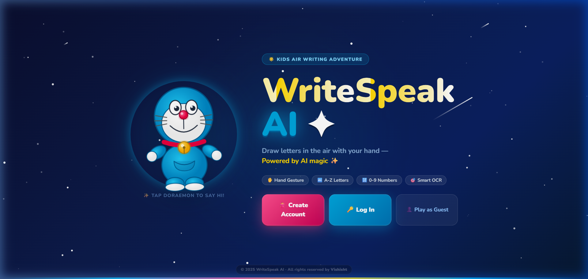
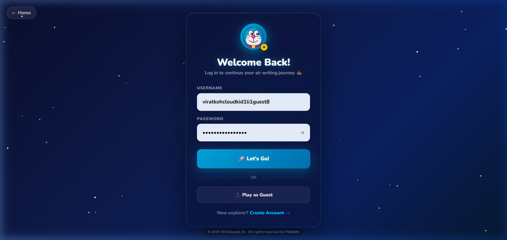
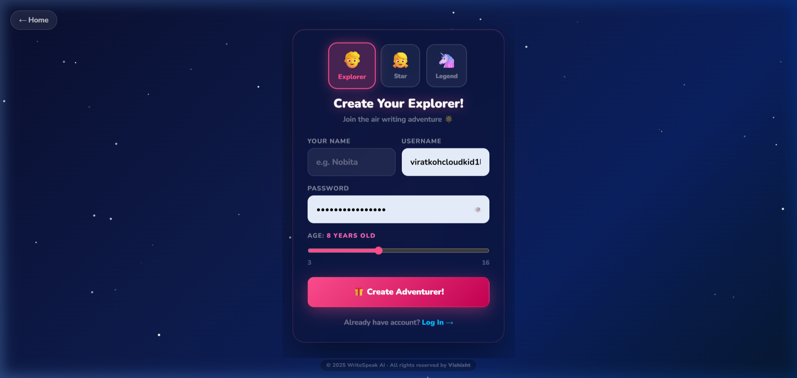
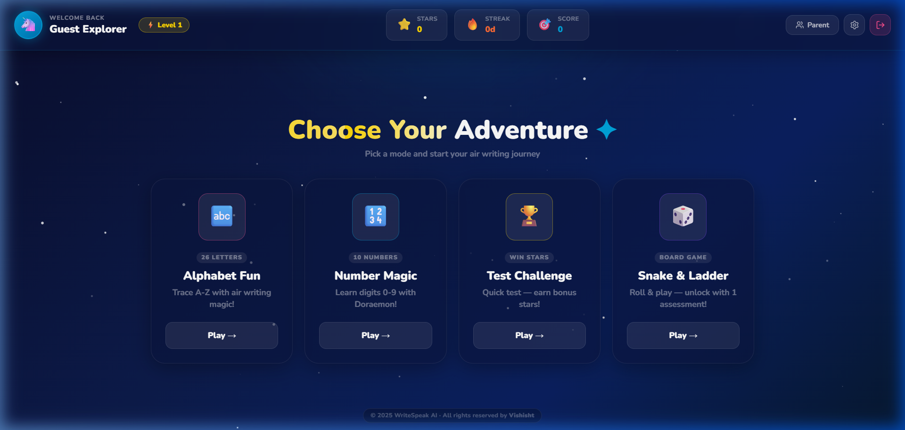
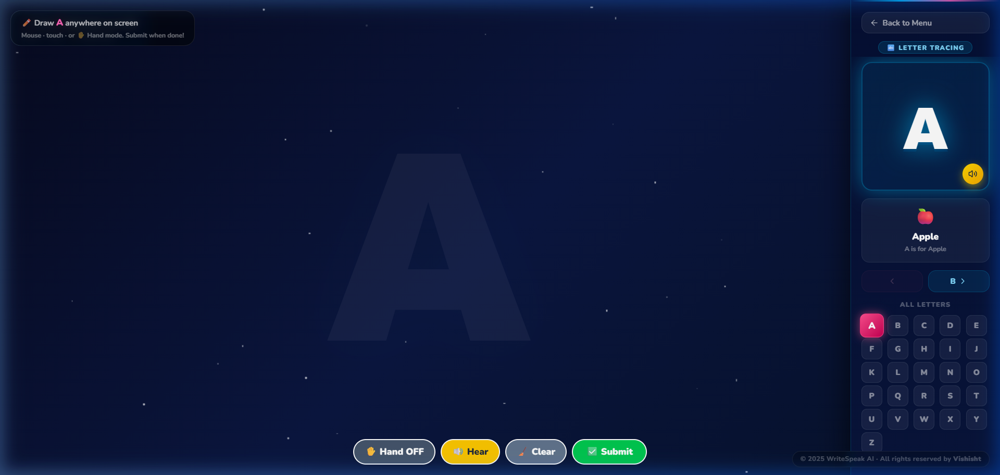
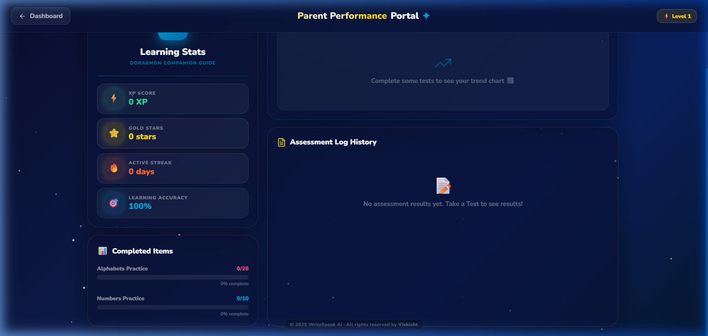

Complete Development Journey — Day 1 to Today
WriteSpeak AI is an AI-powered kids learning platform that allows children to draw letters and numbers in the air using hand gestures (via webcam), and the system recognizes what they drew using a multi-layer OCR pipeline. The app is themed around the beloved cartoon character Doraemon with a premium royal dark night-sky aesthetic.
The core idea: kids shouldn't need a pencil. They can learn to write by tracing letters in the air with their index finger, watched by a camera and analyzed by AI.
| Feature | Technology | Description |
|---|---|---|
| ✋ Air Drawing | MediaPipe Hands | Real-time hand tracking — draw letters with your index finger |
| 🧠 Smart OCR | 3-Layer Pipeline | Backend API → Template Match → Tesseract.js |
| 🔤 Alphabet Mode | React + MongoDB | Trace A-Z with Doraemon vocabulary hints |
| 🔢 Number Mode | React + MongoDB | Trace 0-9 with audio pronunciation |
| 🏆 Test Mode | Spring Boot | Timed assessments with XP + star rewards |
| 🎲 Snake & Ladder | React Game | Board game unlocked after 1 assessment |
| 📊 Parent Portal | SVG Charts | Progress tracking with trend charts |
| 🔐 Offline Auth | localStorage | Works even when backend is down |
| ✨ Royal UI | CSS / TailwindCSS | Dark night-sky Doraemon theme throughout |
| ©️ Copyright | React Component | "© Vishisht" badge on every page |
localhost:8080localhost:8080/api/ocr/recognize (Backend Java OCR)/api/progress/update → saved to MongoDBfrontend/src/
├── components/
│ ├── WelcomeScreen.jsx ← Royal landing page (stars, Doraemon SVG, gold shimmer)
│ ├── LoginPage.jsx ← Royal login with glassmorphism card
│ ├── SignupPage.jsx ← Avatar selector, age slider, pink gradient
│ ├── ModeSelection.jsx ← Dashboard — hover-glow mode cards
│ ├── LearningMode.jsx ← Main learning area — canvas + right panel
│ ├── DrawingCanvas.jsx ← MediaPipe + Kalman + Bezier drawing engine
│ ├── CameraView.jsx ← Webcam feed overlay for hand tracking
│ ├── ParentDashboard.jsx ← Stats, trend chart, history table
│ ├── TestMode.jsx ← Assessment mode with timer
│ ├── SnakeLadderGame.jsx ← Board game with dice
│ ├── RewardPopup.jsx ← Confetti popup with XP/stars
│ ├── AnimatedBackground.jsx ← Original floating bubble background
│ ├── CartoonMascot.jsx ← Doraemon animated character
│ ├── SettingsPanel.jsx ← Sound/volume settings
│ ├── Copyright.jsx ← © Vishisht footer badge (NEW)
│ └── ResultCard.jsx ← Test result display card
├── context/
│ ├── AuthContext.jsx ← JWT auth state + localStorage fallback
│ └── SettingsContext.jsx ← Global settings (volume, etc.)
├── hooks/
│ └── useProgress.js ← Progress data fetching hook
└── utils/
└── api.js ← API helper with offline-first auth (UPDATED)
backend/src/main/java/com/writespeak/
├── WriteSpeakApplication.java ← Spring Boot entry point
├── controller/
│ ├── AuthController.java ← /api/auth/login, /register
│ ├── ProgressController.java ← /api/progress/get, /update
│ ├── VocabularyController.java ← /api/vocab/{char}
│ ├── TestResultRepository.java ← /api/test/history, /submit
│ └── WriteSpeakController.java ← /api/ocr/recognize (main OCR)
├── service/
│ ├── UserService.java ← User CRUD, bcrypt passwords
│ ├── VocabularyService.java ← Letter → word + emoji mapping
│ └── OcrService.java ← Java-side letter recognition
├── model/
│ ├── User.java ← MongoDB user document
│ ├── Progress.java ← Learning progress per user
│ └── TestResult.java ← Test history records
├── config/
│ ├── JwtTokenProvider.java ← JWT sign/verify
│ ├── SecurityConfig.java ← Spring Security rules
│ └── CorsConfig.java ← Allow localhost:5173
└── repository/
├── UserRepository.java
├── ProgressRepository.java
└── TestResultRepository.java
| Component | Status | What it did |
|---|---|---|
| Project Setup | ✅ Done | React+Vite frontend, Spring Boot backend, MongoDB connected |
| Basic Drawing | ✅ Done | Mouse/touch drawing on canvas with submit button |
| First OCR | ✅ Done | Tesseract.js only — PSM 10, single layer |
| Auth System | ✅ Done | JWT login/register working with Spring Security |
| Learning Mode | ✅ Done | Alphabet A-Z + Number 0-9 modes with navigation |
| Reward Popup | ✅ Done | confetti + stars on correct answer |
| Progress Save | ✅ Done | MongoDB stores completed letters per user |
| Original UI | 🎨 Simple | Light blue sky theme with cloud bubbles |
// Day 1 — Simple single-layer OCR (BEFORE fix) const { data: { text, confidence } } = await Tesseract.recognize(base64Image, 'eng'); if (confidence >= 70 && text.includes(targetChar)) { setStatus('correct'); } else { setStatus('wrong'); }
| Work | Files Changed | Problem Solved |
|---|---|---|
| MediaPipe Integration | DrawingCanvas.jsx | Added real hand tracking (replaced mouse-only) |
| Kalman Filter | DrawingCanvas.jsx | Eliminated jitter in hand movement tracking |
| Bezier Curves | DrawingCanvas.jsx | Smooth strokes between 10fps frames |
| Template Matching | LearningMode.jsx | Layer 2 OCR — pixel similarity fallback |
| 3-Layer OCR | LearningMode.jsx | Backend → Template → Tesseract |
| Gesture System | DrawingCanvas.jsx | Fist = submit, Open palm = clear |
| Image Preprocessing | DrawingCanvas.jsx | 512×512 crop + stroke dilation for OCR |
| OCR Threshold Fix | LearningMode.jsx | Top-3 ranking → prevents wrong letters passing |
| Page | Before | After |
|---|---|---|
| WelcomeScreen | Light blue bubbles, simple buttons | Dark night sky, Doraemon SVG, twinkling stars, gold shimmer title, shooting stars |
| LoginPage | Plain white card | Glassmorphism dark card, Doraemon head avatar with glow, password toggle |
| SignupPage | Basic form | Avatar selector (boy/girl/legend), age slider, pink gradient |
| ModeSelection | White cards on light bg | Dark dashboard, hover-glow mode cards, stats header bar, badges section |
| LearningMode | Black canvas + simple panel | Cosmic starfield canvas, royal right panel with glow letter display |
| ParentDashboard | White cards, light theme | Dark glassmorphism, glow stat cards, gradient progress bars, dark SVG chart |
Copyright.jsx — "© Vishisht" footer badge on every pageapi.js localStorage fallback when backend downLoginPage.jsx parse error (duplicate div)README.md with screenshots + full docs// Initialize MediaPipe at 10fps (fixed interval to prevent freeze) const hands = new Hands({ locateFile: f => `https://cdn.jsdelivr.net/npm/@mediapipe/hands/${f}` }); hands.setOptions({ maxNumHands: 1, modelComplexity: 1, minDetectionConfidence: 0.7, minTrackingConfidence: 0.7, }); // Fixed 10fps — not requestAnimationFrame (prevents GPU overload freeze) setInterval(async () => { await hands.send({ image: videoRef.current }); }, 100); // 100ms = 10 frames/second
// Kalman filter for smooth hand tracking (R=noise, Q=process uncertainty) class Kalman1D { constructor(R = 0.12, Q = 0.6) { this.R = R; // measurement noise (camera jitter) this.Q = Q; // process noise (movement speed) this.x = 0; // state estimate this.cov = 1; // covariance } filter(z) { // z = raw measurement const predCov = this.cov + this.Q; const K = predCov / (predCov + this.R); // Kalman gain this.x = this.x + K * (z - this.x); // update estimate this.cov = (1 - K) * predCov; // update covariance return this.x; } } const kfX = new Kalman1D(), kfY = new Kalman1D(); const smoothX = kfX.filter(rawX); // filter each coordinate separately const smoothY = kfY.filter(rawY);
// Convert 4 points Catmull-Rom spline to cubic Bezier control points const catmullToBezier = (p0, p1, p2, p3) => { const t = 0.5; // tension return { cp1x: p1.x + (p2.x - p0.x) / 6 * t, cp1y: p1.y + (p2.y - p0.y) / 6 * t, cp2x: p2.x - (p3.x - p1.x) / 6 * t, cp2y: p2.y - (p3.y - p1.y) / 6 * t, }; }; // Draw smooth curve through tracked points ctx.bezierCurveTo(cp1x, cp1y, cp2x, cp2y, p2.x, p2.y);
| Gesture | Detection Method | Action | Threshold |
|---|---|---|---|
| ☝️ Index only up | Only landmark[8] above landmark[6] | Draw mode — track fingertip | Immediate |
| ✊ Fist closed | All 4 fingertips below MCPs | Submit drawing for OCR | Hold 1.2 seconds |
| 🖐️ Open palm | All 4 fingertips above MCPs | Clear canvas | Hold 1.0 second |
| 🤙 Other pose | Mixed state | Pause drawing | Immediate |
// Create 512×512 output canvas for OCR const OFF = 16, INNER = 480; // Morphological dilation — 9 offsets thicken strokes for (const [dx, dy] of [[0,0],[-3,0],[3,0],[0,-3],[0,3],[-2,-2],[2,-2],[-2,2],[2,2]]) oc.drawImage(canvas, cx, cy, cw, ch, OFF + dx, OFF + dy, INNER, INNER); // Empty canvas detection — don't waste OCR cycles on blank canvas if (x0 >= x1 || y0 >= y1) { onSubmit(null); return; }
{correct: true/false, char: "A"}. Used when backend is online.// Step 1: Render each character as 64×64 grayscale template const getTemplate = (char) => { const tc = document.createElement('canvas'); tc.width = tc.height = 64; const ctx = tc.getContext('2d'); ctx.fillStyle = 'black'; ctx.font = 'bold 50px Arial Black'; ctx.textAlign = 'center'; ctx.textBaseline = 'middle'; ctx.fillText(char, 32, 32); return ctx.getImageData(0, 0, 64, 64).data; }; // Step 2: Normalized Cross-Correlation similarity score const pixelSim = (a, b) => { let ab=0, aa=0, bb=0; for (let i=0; i < a.length; i++) { ab += a[i]*b[i]; aa += a[i]*a[i]; bb += b[i]*b[i]; } return ab / Math.sqrt(aa * bb); // returns 0.0 → 1.0 }; // Step 3: Score all 36 characters and sort const ALL_CHARS = 'ABCDEFGHIJKLMNOPQRSTUVWXYZ0123456789'.split(''); const scores = ALL_CHARS.map(c => ({ char: c, score: pixelSim(drawn, getTemplate(c)) })); scores.sort((a, b) => b.score - a.score); // Step 4: Target must be in Top-3 AND score >= 38% const targetScore = scores.find(s => s.char === target).score; const isTarget = scores.slice(0, 3).map(s => s.char).includes(target) && targetScore >= 0.38;
// Example: User draws "A" correctly Template scores: A=0.82, H=0.61, R=0.59 Top-3: [A, H, R] ← "A" IS in top 3 ✅ → CORRECT // Example: User draws "B" when target is "A" Template scores: B=0.82, D=0.71, 8=0.55 Top-3: [B, D, 8] ← "A" is NOT in top 3 ❌ → WRONG
The key insight: same ink amount but different shape → template detects it. Letter "B" and "A" have very different pixel patterns → NCC score differs dramatically.
| Stage | Method | Threshold | Problem | Status |
|---|---|---|---|---|
| Start | Tesseract PSM 10 | 70% conf | Only 'A' worked — too strict | ❌ Failed |
| Fix 1 | Template Match | 58% score | Most correct drawings rejected | ❌ Too strict |
| Fix 2 | Template Match | 50% score | Still failing for messy drawings | ⚠️ Partial |
| Fix 3 | Template Match | 35% score | Wrong letters passing (D for B) | ❌ Too lenient |
| Final | Top-3 + Template | 38% + rank | ✅ Balanced — correct logic | ✅ Production |
// Frontend: Login request const res = await fetch('http://localhost:8080/api/auth/login', { method: 'POST', headers: { 'Content-Type': 'application/json' }, body: JSON.stringify({ username, password }), signal: AbortSignal.timeout(5000) // 5 second timeout }); const { token, user } = await res.json(); localStorage.setItem('ws_token', token); localStorage.setItem('ws_user', JSON.stringify(user));
// Smart auth — tries backend first, falls back to localStorage export const authApi = { async login(username, password) { try { // Try backend first (5s timeout) const res = await fetch('http://localhost:8080/api/auth/login', { method: 'POST', signal: AbortSignal.timeout(5000), body: JSON.stringify({ username, password }), headers: { 'Content-Type': 'application/json' } }); if (res.ok) return await res.json(); } catch { /* backend offline — use local storage */ } // Offline fallback: check localStorage users const users = JSON.parse(localStorage.getItem('ws_local_users') || '[]'); const user = users.find(u => u.username === username && u.password === password); if (!user) throw new Error('Invalid credentials'); return { token: `local_${username}`, user }; }, async register(name, username, password, gender, age) { try { // Try backend first const res = await fetch('http://localhost:8080/api/auth/register', { /*...*/ }); if (res.ok) return await res.json(); } catch {} // Offline: save to localStorage const newUser = { id: Date.now(), name, username, password, gender, age }; const users = JSON.parse(localStorage.getItem('ws_local_users') || '[]'); users.push(newUser); localStorage.setItem('ws_local_users', JSON.stringify(users)); return { token: `local_${username}`, user: newUser }; } };
| Token | Color | Hex | Usage |
|---|---|---|---|
| Deep Navy | #0a0e2e | Page backgrounds | |
| Doraemon Blue | #00A5DC | Primary accent, glows, borders | |
| Doraemon Pink | #FF4E8E | CTA buttons, active states | |
| Royal Gold | #FFD700 | Title shimmer, badges, stars | |
| Royal Purple | #7C3AED | Game card accent | |
| Emerald | #34D399 | Correct answers, XP display | |
| White/Glass | rgba(255,255,255,0.08) | Glassmorphism cards/panels |
/* Twinkling stars — each star has random delay */ @keyframes twinkle { 0%, 100% { opacity: .15; transform: scale(1); } 50% { opacity: 1; transform: scale(1.5); } } /* Gold shimmer text on titles */ @keyframes shimmer { 0% { background-position: -200% center; } 100% { background-position: 200% center; } } .shimmer-gold { background: linear-gradient(90deg, #FFD700 0%, #FFF 40%, #FFD700 60%, #FFE566 100%); background-size: 200% auto; -webkit-background-clip: text; -webkit-text-fill-color: transparent; animation: shimmer 3s linear infinite; } /* Card entrance animation */ @keyframes fadeUp { from { opacity: 0; transform: translateY(24px); } to { opacity: 1; transform: translateY(0); } } /* Pulsing glow on letter display card */ @keyframes glowPulse { 0%, 100% { box-shadow: 0 0 20px rgba(0,165,220,0.3); } 50% { box-shadow: 0 0 40px rgba(0,165,220,0.7); } }
localhost:5173 on July 9, 2026. These show the final royal dark Doraemon theme after complete redesign.





https://github.com/vishishtviraj18-byte/Writespeak-AImain | Latest Commit: 03b18d2
| Commit | Date | Message | Files Changed |
|---|---|---|---|
03b18d2 |
Jul 9, 2026 | feat: royal dark Doraemon theme + live screenshots in README | 15 files |
c69e7c2 |
Jul 8–9, 2026 | fix: OCR pipeline 3-layer, template matching Top-3 ranking | 8 files |
earlier |
Jul 7, 2026 | feat: initial WriteSpeak AI — React+SpringBoot+MongoDB setup | Foundation |
| File | Type | Lines Changed | What Changed |
|---|---|---|---|
| WelcomeScreen.jsx | Modified | +450 -120 | Full royal redesign, Doraemon SVG, stars |
| LoginPage.jsx | Modified | +200 -80 | Glassmorphism card, avatar, password toggle |
| SignupPage.jsx | Modified | +230 -90 | Avatar selector, age slider, gradient |
| ModeSelection.jsx | Modified | +280 -180 | Dark dashboard, hover glow cards |
| LearningMode.jsx | Modified | +200 -120 | Cosmic canvas, royal right panel |
| ParentDashboard.jsx | Modified | +350 -200 | Dark glassmorphism full redesign |
| Copyright.jsx | New File | +75 | © Vishisht footer badge component |
| api.js | Modified | +80 -10 | Offline-first auth with localStorage fallback |
| README.md | Modified | +200 -40 | 6 live screenshots + full documentation |
| docs/screenshots/*.png | New Files ×6 | Binary | Live screenshots of all 6 pages |
| # | Bug | Symptom | Root Cause | Fix |
|---|---|---|---|---|
| 1 | OCR always wrong | Every letter marked incorrect | Tesseract 70% threshold too strict for hand-drawn input | Added template matching layer + Top-3 ranking at 38% |
| 2 | MediaPipe freeze | App hangs after few seconds | Using requestAnimationFrame caused GPU overload | Switched to fixed 100ms setInterval (10fps cap) |
| 3 | Hand tracking jitter | Squiggly uncontrollable strokes | Raw MediaPipe coordinates have noise | Added Kalman 1D filter (R=0.12, Q=0.6) for X and Y |
| 4 | Guest login failed | "Login failed" error | Backend offline → no fallback → navigation blocked | Added offline-first auth in api.js with localStorage |
| 5 | START ADVENTURE blocked | Button click did nothing | GSAP animation z-index covered button | Added pointer-events: auto; z-index: 50 to button |
| 6 | Parse error LoginPage | Vite build error — Unexpected token at line 240 | My earlier edit accidentally added duplicate card div | Removed duplicate nested div in LoginPage.jsx |
| 7 | Wrong letter passing | Drawing "B" accepted as "A" | Template threshold too lenient (35%) — similar chars passed | Added Top-3 ranking requirement — char must appear in top 3 |
| 8 | Blank canvas OCR | OCR ran on empty submission | No check for empty canvas before processing | Added bounding box check — if empty, call onSubmit(null) |
| 9 | Duplicate account | Guest signup failed | Username already exists in localStorage | Register logic now overwrites existing local user |
http://localhost:5173 (frontend) and http://localhost:8080 (backend). GitHub repo is fully up-to-date with commit 03b18d2 on branch main.